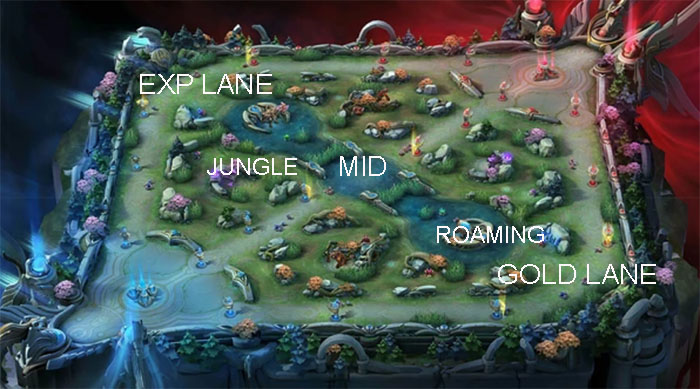

Melhor lane para Hanzo
Hanzo é um Assassino tem grande dano crítico e alta mobilidade. Você pode usar Hanzo para Jungle. Hanzo se destaca como um assassino em localizar presas fracas e frágeis e despachá-las rapidamente. Em batalhas de equipe, ele deve ter como objetivo flanquear a linha de fundo do adversário com seu ultimate, matando o atirador e/ou mago, liberando sua equipe para avançar com pouca resistência do adversário como resultado dos alvos que ele tirou.
Estratégias de Hanzo
Se você gosta de efeitos de velocidade de ataque Hanzo, você pode usar itens combinados: Demon Hunter Sword, Swift Boots, Corrosion Scythe, Golden Staff, Blade of Despair, Hunter Strike. Se você gosta de Hanzo pro build você pode usar itens combinados: Ice Hunter's Magic Shoes, Corrosion Scythe, Demon Hunter Sword, Golden Staff, Malefic Roar, Blade of the Heptaseas.